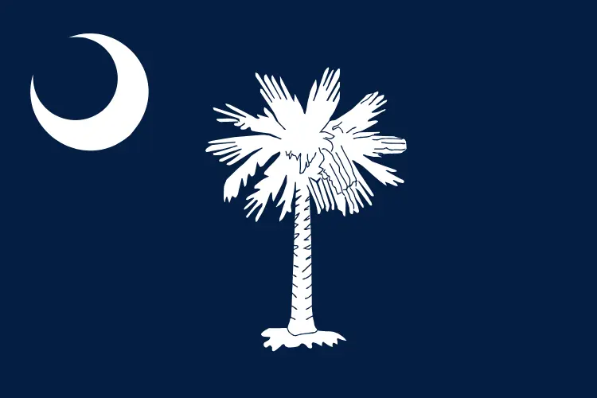

My name is Nathan Johnson, and I'm living in the beautiful state of South Carolina. I'm currently working as a system administrator for a pest control company. I recently got married to my wonderful wife, and building a life with her has been the best experience of my life. I love being outdoors, and I enjoy rock climbing, slot canyons, and hiking. I also have a passion for technology and programming.
About Me
SC, USA

South Carolina, constituent state of the United States of America, one of the 13 original colonies. It lies on the southern Eastern Seaboard of the United States. Shaped like an inverted triangle with an east-west base of 285 miles (459 km) and a north-south extent of about 225 miles (360 km), the state is bounded on the north by North Carolina, on the southeast by the Atlantic Ocean, and on the southwest by Georgia. Columbia, located in the centre of the state, is the capital and largest city.